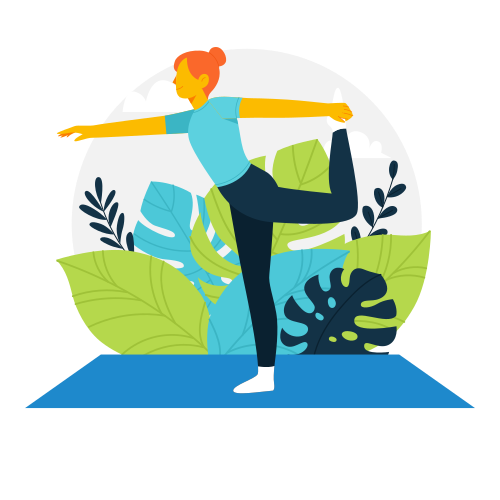

به استودیو یوگا خورشید خوش آمدید
علت حالت تهوع و سرگیجه و سر درد بعد یوگا چیست
ممکن است دلایل مختلفی وجود داشته باشد که چرا ممکن است بعد از تمرین یوگا احساس سردرد و سرگیجه کنید که برخی از آنها ممکن است شامل موارد زیر باشد:
اگر قبل، حین یا بعد از تمرین یوگا به اندازه کافی هیدراته نشده باشید، می تواند باعث سردرد و سرگیجه شود.
تمرین یوگا فراتر از محدودیت های فیزیکی یا فعالیت بیش از حد می تواند منجر به سردرد و سرگیجه شود.
اگر برای مدت طولانی قبل از تمرین یوگا چیزی نخورده باشید، ممکن است سطح قند خون شما کاهش یابد و منجر به سردرد و سرگیجه شود.
تکنیک های تنفس نامناسب در حین تمرین یوگا نیز می تواند باعث سردرد و سرگیجه شود.
سردرد و سرگیجه بعد از یوگا همچنین میتواند علائم یک بیماری زمینهای مانند میگرن، سرگیجه یا فشار خون پایین باشد.
همیشه ایده خوبی است که قبل از شروع هر برنامه ورزشی جدید، با ارائه دهنده مراقبت های بهداشتی خود صحبت کنید، به خصوص اگر از قبل شرایط یا نگرانی های پزشکی دارید. آنها می توانند به شما کمک کنند تا علت علائم خود را تعیین کنید و راهنمایی هایی در مورد نحوه مدیریت آنها ارائه دهید. علاوه بر این، مطمئن شوید که هیدراته بمانید، در صورت نیاز استراحت کنید و در حد محدودیت های فیزیکی خود تمرین کنید تا از هر گونه ناراحتی بیشتر جلوگیری کنید.